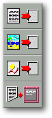
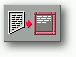
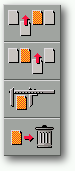

<!-- Documentation Xclamation (c)1994-2000 AXENE contact axene@axene.org>
<html>
<head>
<title>Menus contextuels</title>
</head>

<body BGCOLOR="#FFFFFF" BACKGROUND="Images/back.gif" TEXT="#000000">
<p ALIGN="right">

<p>
<br>
<br>
Les menus contextuels sont des menus déroulants qui proposent
des entrées différentes en fonction de l'endroit
où se situe le curseur souris. Pour ouvrir un menu contextuel,
il faut placer la souris à un endroit précis et
faire une pression prolongée sur le bouton droit de la
souris sans la bouger.
<br>
<br>
<hr>
<a NAME="cm_no_frame"><h3>Menu contextuel du plan d'affichage&nbsp;:</h3></a>
<br>
<center>

</center>
<p>
Le menu contextuel du plan d'affichage peut être
ouvert si le pointeur de la souris est placé sur le plan
d'affichage d'un document, en dehors de tout cadre. Ce menu contient
trois entrées&nbsp;:
<ul>
  <li><a NAME="create_rectangle_icon">
     le premier bouton icône
     représente un rectangle et permet de <b>créer des cadres
     rectangulaires</b>.
     </a><p>
  <li><a NAME="create_ellipse_icon">
     le second bouton icône
     représente une ellipse et permet de <b>créer des cadres
     elliptiques</b>.
     </a><p>
  <li><a NAME="create_polygon_icon">
     le troisième bouton icône
     représente un trapèze et permet de <b>créer des
     cadres polygonaux multiformes</b>.
     </a><p>
</ul>

<p>
<br>
<hr>
<a NAME="cm_frame_empty"><h3>Menu contextuel des cadres vides&nbsp;:</h3></a>
<br>
<center>

</center>
<p>
Le menu contextuel des cadres vides peut être ouvert
si le pointeur de la souris est placé sur le plan d'affichage
d'un document, à l'intérieur d'un cadre vide. Le cadre
pointé sera sélectionné automatiquement et
l'action portera uniquement sur celui-ci. Ce menu contient quatre
entrées&nbsp;:
<ul>
  <li><a NAME="import_text_icon">
     le premier bouton icône permet
     d'<b>importer un texte</b> dans le cadre. 
     Le sélecteur 
     de fichier '<a HREF="Box_File_Selectors.html#fs_import_text">Importation
     de texte</a>'
     va s'ouvrir pour choisir le nom du fichier à importer.
     </a><p>
  <li><a NAME="import_image_icon">
     le second bouton icône permet
     d'<b>importer une image</b> dans le cadre. Le sélecteur de fichier 
     '<a HREF="Box_File_Selectors.html#fs_import_image">Importation d'image</a>'
     va s'ouvrir pour choisir le nom du fichier à importer.
     </a><p>
  <li><a NAME="import_vector_icon">
     le troisième bouton icône
     permet d'<b>importer un dessin vectoriel</b> dans le cadre. 
     Le sélecteur de fichier 
     '<a HREF="Box_File_Selectors.html#fs_import_vector">Importation de
     dessin vectoriel</a>'
     va s'ouvrir pour choisir le nom du fichier à importer.
     </a><p>
  <li><a NAME="editor_icon">
     le quatrième bouton icône
     permet de créer un texte pour remplir le cadre. 
     L'<a HREF="Box_Editor.html">éditeur de texte</a> va
     s'ouvrir afin de pouvoir écrire le texte.
     </a><p>
</ul>
<p>
<br>
<hr>
<a NAME="cm_editor"><h3>Menu contextuel des cadres textes&nbsp;:</h3></a>
<br>
<center>

</center>
<p>
Le menu contextuel des cadres textes peut être ouvert si le
pointeur de la souris est placé sur le plan d'affichage
d'un document, à l'intérieur d'un cadre contenant
du texte. Le cadre pointé sera sélectionné
automatiquement et l'<a HREF="Box_Editor.html">éditeur de texte</a>
qui sera appelé permettra de <b>modifier le texte du cadre</b>.
<p>
<br>
<hr>
<a NAME="cm_pager"><h3>Menu contextuel du gestionnaire de pages&nbsp;:</h3></a>
<br>
<center>

</center>
<p>
Le menu contextuel du gestionnaire de pages, peut être ouvert
si le pointeur de la souris est placé sur une icône
représentant une page dans le gestionnaire. On peut utiliser
à cet effet une pression prolongée sur le bouton
gauche de la souris. La page pointée sera sélectionnée
et l'action portera sur celle-ci. Ce menu comporte quatre entrées&nbsp;:
<ul>
  <li><a NAME="add_page_before_icon">
     le premier bouton icône
     permet d'<b>ajouter une page avant</b> la page sélectionnée.
     La nouvelle page a les mêmes caractéristiques
     que la page sélectionnée mais sera vierge.
     </a><p>
  <li><a NAME="add_page_after_icon">
     le second bouton icône
     permet d'<b>ajouter une page après</b> la page sélectionnée.
     La nouvelle page a les mêmes caractéristiques
     que la page sélectionnée mais sera vierge.
     </a><p>
  <li><a NAME="modify_page_icon">
     le troisième bouton icône
     permet de <b>modifier les caractéristiques d'une page</b>. A cet
     effet, la boîte de dialogue 
     '<a HREF="Box_Modify_Page.html">Modification de page</a>' sera ouverte.
     </a><p>
  <li><a NAME="destroy_page_icon">
     le dernier bouton icône
     permet de <b>détruire la page sélectionnée</b>.
     Attention, les informations contenues dans la page à
     détruite sont perdues.
     </a><p>
</ul>
<p>
<b>Nota&nbsp;:</b> ouvrir ce menu contextuel est l'unique moyen d'accéder
aux actions qu'il propose, contrairement aux autres menus contextuels
qui ne sont que des raccourcis.
<p>
<br>
<hr>
<p ALIGN="right">
<p>
</body>
</html>


